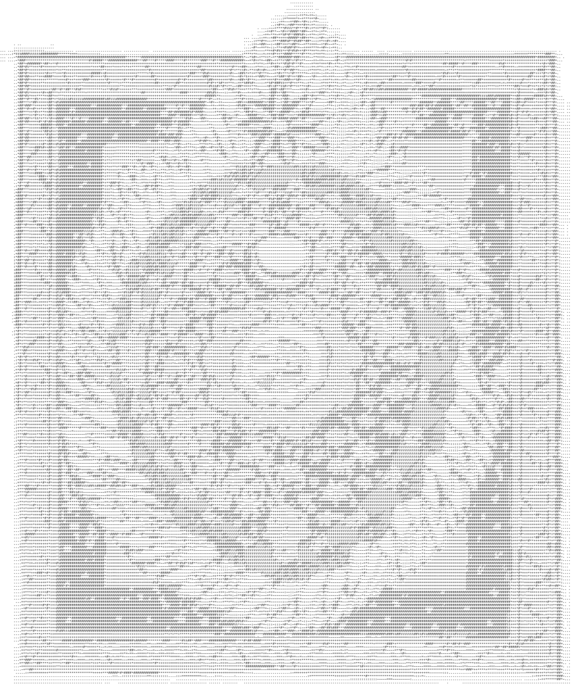
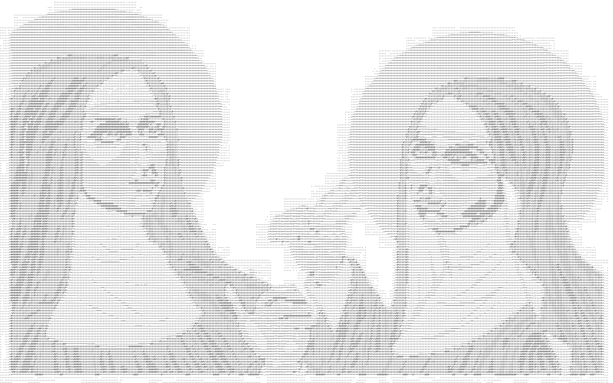

As the name might suggest, ProgramMigrating Language(pML) is a fictitious programming language conceived to express feelings of migration, movement and the linguistic shifts associated with them. Within esolangs, “multicoding” is the idea that “one text holds multiple meanings, depending on context” (Temkin, 2020). Examples of multicoding are polyglots: computer programs that can be interpreted and executed in multiple programming languages (Temkin, 2018). With ProgramMigrating Language I tried to create a polyglot code that can be read in multiple human languages instead: keywords are created in a shifting mix of Italian and English. The code can assume different meanings, based on the reader’s own interpretation and knowledge; it supports the coexistence of multiple, sometimes opposite, meanings and perspectives, while being rooted in my personal experience (reinforced by the presence of my own poetry in the comments, breaking the flow of the code). Following micha cárdenas’ example, I endeavoured to write algorithms as a representation of the moving, shifting and adjusting relationship between the complex linguistic intersections of my identity.
